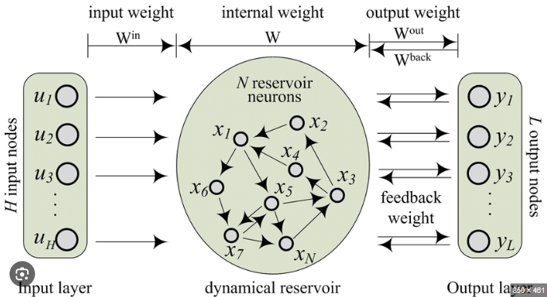
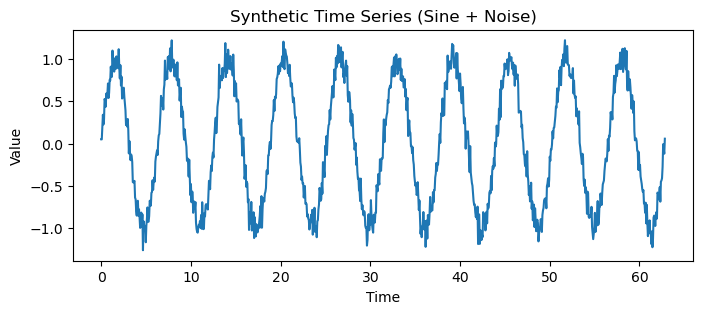
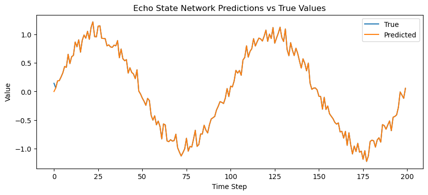

Echo State Networks (ESN)#
Concept#
An Echo State Network (ESN) is a type of Recurrent Neural Network (RNN) that uses a fixed, randomly initialized “reservoir” of neurons to model temporal dynamics — only the output weights are trained.
It belongs to the broader class of Reservoir Computing architectures.
Core Intuition#
Traditional RNNs (like LSTMs, GRUs) train all weights — this is slow and prone to vanishing gradients. ESNs avoid this by:
Keeping the recurrent (hidden) connections fixed and random,
Training only the output layer (using simple linear regression).
This random recurrent “reservoir” acts as a dynamic memory that transforms the input sequence into a rich, high-dimensional temporal representation. The “echo” in Echo State Network comes from how the reservoir’s internal states keep a fading memory of past inputs — like echoes fading over time.
Architecture Overview#
Input → Reservoir (fixed RNN) → Output (trainable linear readout)

Component |
Description |
|---|---|
Input layer |
Projects input into the reservoir |
Reservoir |
Large, fixed RNN with randomly connected neurons |
Output layer |
Linear model trained to map reservoir states to target output |
Mathematical Workflow#
Let:
\(x_t\): input at time t
\(h_t\): reservoir state
\(y_t\): output
\(W_{in}, W, W_{out}\): input, recurrent, and output weights
State update equation: $\( h_t = \tanh(W_{in}x_t + W h_{t-1}) \)$
Output: $\( y_t = W_{out} [x_t, h_t] \)$
Only \(W_{out}\) is trained (using linear regression or ridge regression). \(W\) and \(W_{in}\) are fixed random matrices scaled to satisfy the Echo State Property.
Echo State Property (ESP)#
To ensure stability:
The influence of old inputs should fade over time.
This requires the spectral radius (largest absolute eigenvalue) of \(W\) to be < 1.
This keeps the reservoir dynamics stable (no exploding activations).
Workflow Summary#
Step |
Stage |
Operation |
Description |
|---|---|---|---|
1 |
Initialize |
Randomly set \(W_{in}\), \(W\) |
Create fixed reservoir |
2 |
Scale \(W\) |
Adjust spectral radius < 1 |
Ensure echo state property |
3 |
Feed data |
Pass sequential input through reservoir |
Generate internal states \(h_t\) |
4 |
Collect states |
Store all \(h_t\) |
Form feature matrix |
5 |
Train output layer |
Solve linear regression for \(W_{out}\) |
Learn mapping from states to targets |
6 |
Predict |
Use trained \(W_{out}\) for inference |
Fast, no recurrence training |
Intuitive Analogy#
The reservoir acts like a liquid that ripples when new inputs are added:
Each input perturbs the system,
The ripples (internal activations) encode temporal information,
The output layer learns to read these ripples to produce predictions.
This is why ESNs are often visualized as a “liquid state machine.”
Advantages#
Advantage |
Explanation |
|---|---|
Fast training |
Only output weights are trained (simple regression). |
No vanishing gradients |
No backpropagation through time. |
Good for temporal patterns |
Reservoir captures dynamic system behavior. |
Stable and robust |
If spectral radius < 1, dynamics stay bounded. |
Disadvantages#
Disadvantage |
Explanation |
|---|---|
Hyperparameter-sensitive |
Performance depends on random initialization, spectral radius, and reservoir size. |
Lack of adaptability |
Reservoir is fixed; cannot fine-tune to specific data. |
Less expressive |
Struggles with highly nonlinear, long-term dependencies. |
Not ideal for large-scale NLP or deep learning tasks |
Works best for smaller or continuous dynamical systems. |
When to Use ESNs#
Use Case |
Reason |
|---|---|
Time-series forecasting |
Fast and effective for nonlinear temporal signals (e.g., weather, stock data). |
System modeling / control |
Captures dynamic behaviors of physical systems. |
Signal processing |
Works for temporal feature extraction and denoising. |
Low-resource environments |
No GPU training needed. |
When interpretability and speed matter |
Easy to analyze due to linear output layer. |
Typical Hyperparameters#
Hyperparameter |
Description |
Typical Range |
|---|---|---|
Reservoir size |
Number of neurons in the reservoir |
100–1000 |
Spectral radius |
Controls memory length and stability |
0.8–0.99 |
Input scaling |
Controls input influence on reservoir |
0.1–1.0 |
Leak rate |
Controls update speed of states |
0.1–1.0 |
Regularization (ridge α) |
Stabilizes output weight learning |
1e−4–1e−2 |
Comparison with Other RNNs#
Feature |
RNN / LSTM / GRU |
ESN |
|---|---|---|
Training |
Backpropagation through time |
Linear regression only |
Trainable parameters |
All weights |
Only output weights |
Speed |
Slow |
Very fast |
Memory control |
Learned via gates |
Controlled via spectral radius |
Stability |
Learned |
Must be tuned manually |
Best for |
Deep sequence modeling |
Dynamical systems, forecasting |
Summary
Aspect |
Description |
|---|---|
Idea |
Fixed random reservoir transforms inputs; only output layer learns. |
Core property |
Echo State Property ensures stable fading memory. |
Training |
Linear regression (no backprop). |
Best for |
Fast, interpretable modeling of time-dependent systems. |
Demonstration#
Cell 1 — Import Dependencies#
# Install if needed:
# !pip install numpy pandas scikit-learn matplotlib
import numpy as np
import pandas as pd
from sklearn.linear_model import Ridge
from sklearn.metrics import mean_squared_error
import itertools
import matplotlib.pyplot as plt
🧩 Cell 2 — Generate Synthetic Time-Series Data#
np.random.seed(42)
T = 1000
time = np.linspace(0, 20 * np.pi, T)
data = np.sin(time) + np.random.normal(0, 0.1, T) # sine wave + noise
plt.figure(figsize=(8, 3))
plt.plot(time, data)
plt.title("Synthetic Time Series (Sine + Noise)")
plt.xlabel("Time")
plt.ylabel("Value")
plt.show()

🧩 Cell 3 — Train/Test Split#
split = int(T * 0.8)
train_data = data[:split]
test_data = data[split:]
print(f"Train samples: {len(train_data)}, Test samples: {len(test_data)}")
Train samples: 800, Test samples: 200
Cell 4 — Define ESN Helper Functions#
def create_esn(n_inputs, n_reservoir, spectral_radius, input_scaling):
"""
Creates random input (Win) and reservoir (W) matrices scaled to spectral radius.
"""
Win = np.random.uniform(-input_scaling, input_scaling, (n_reservoir, n_inputs))
W = np.random.uniform(-1, 1, (n_reservoir, n_reservoir))
rhoW = max(abs(np.linalg.eigvals(W)))
W *= spectral_radius / rhoW # ensure echo state property
return Win, W
def run_esn(u, Win, W, leak_rate=1.0):
"""
Runs reservoir dynamics for input sequence u.
"""
n_reservoir = W.shape[0]
x = np.zeros((n_reservoir, len(u)))
for t in range(1, len(u)):
x[:, t] = (1 - leak_rate) * x[:, t - 1] + leak_rate * np.tanh(Win @ np.array([[u[t]]])[:, 0] + W @ x[:, t - 1])
return x
def train_esn(u_train, u_test, Win, W, alpha=1e-3):
"""
Trains ESN output weights using Ridge regression and returns predictions.
"""
x_train = run_esn(u_train, Win, W)
ridge = Ridge(alpha=alpha)
ridge.fit(x_train.T, u_train)
y_pred_train = ridge.predict(x_train.T)
x_test = run_esn(u_test, Win, W)
y_pred_test = ridge.predict(x_test.T)
return y_pred_train, y_pred_test
🧩 Cell 5 — Define Hyperparameter Grid#
spectral_radii = [0.8, 0.9, 0.99]
input_scalings = [0.1, 0.5, 1.0]
reservoir_sizes = [100, 200]
alphas = [1e-3, 1e-2]
🧩 Cell 6 — Train and Tune ESN Models#
results = []
for sr, scale, size, alpha in itertools.product(spectral_radii, input_scalings, reservoir_sizes, alphas):
Win, W = create_esn(1, size, sr, scale)
y_train_pred, y_test_pred = train_esn(train_data, test_data, Win, W, alpha)
mse = mean_squared_error(test_data, y_test_pred)
results.append((sr, scale, size, alpha, mse))
results_df = pd.DataFrame(results, columns=["Spectral Radius", "Input Scaling", "Reservoir Size", "Alpha", "Test MSE"])
results_df.sort_values("Test MSE").head()
| Spectral Radius | Input Scaling | Reservoir Size | Alpha | Test MSE | |
|---|---|---|---|---|---|
| 10 | 0.8 | 1.0 | 200 | 0.001 | 0.000104 |
| 6 | 0.8 | 0.5 | 200 | 0.001 | 0.000104 |
| 18 | 0.9 | 0.5 | 200 | 0.001 | 0.000104 |
| 4 | 0.8 | 0.5 | 100 | 0.001 | 0.000104 |
| 14 | 0.9 | 0.1 | 200 | 0.001 | 0.000104 |
🧩 Cell 7 — Display Best Configuration#
best_config = results_df.loc[results_df["Test MSE"].idxmin()]
print("Best ESN Configuration:")
print(best_config)
Best ESN Configuration:
Spectral Radius 0.800000
Input Scaling 1.000000
Reservoir Size 200.000000
Alpha 0.001000
Test MSE 0.000104
Name: 10, dtype: float64
Cell 8 — Retrain Best ESN and Visualize Predictions#
best_sr = best_config["Spectral Radius"]
best_scale = best_config["Input Scaling"]
best_size = int(best_config["Reservoir Size"])
best_alpha = best_config["Alpha"]
# Recreate and retrain ESN with best hyperparameters
Win, W = create_esn(1, best_size, best_sr, best_scale)
y_train_pred, y_test_pred = train_esn(train_data, test_data, Win, W, best_alpha)
# Plot predictions
plt.figure(figsize=(10, 4))
plt.plot(np.arange(len(test_data)), test_data, label="True")
plt.plot(np.arange(len(test_data)), y_test_pred, label="Predicted")
plt.title("Echo State Network Predictions vs True Values")
plt.xlabel("Time Step")
plt.ylabel("Value")
plt.legend()
plt.show()

What Happens Here#
Step |
Description |
|---|---|
1 |
Random reservoir (fixed) created |
2 |
Reservoir state evolves for each input |
3 |
States used as features for Ridge regression |
4 |
Only output weights trained (fast) |
5 |
Hyperparameters tuned via grid search |
6 |
Best config used to retrain and predict |
Tuning Parameters Summary#
Parameter |
Role |
Good Range |
|---|---|---|
Spectral Radius (ρ) |
Controls memory retention |
0.8–0.99 |
Input Scaling |
Controls input sensitivity |
0.1–1.0 |
Reservoir Size |
Number of neurons in dynamic reservoir |
100–1000 |
Alpha (Ridge) |
Regularization strength |
1e−4–1e−2 |